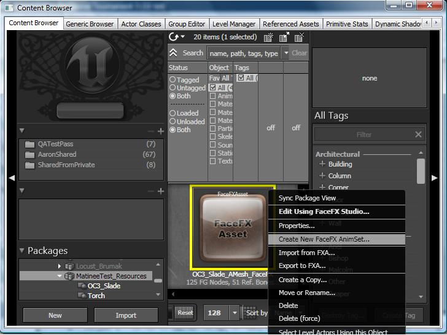
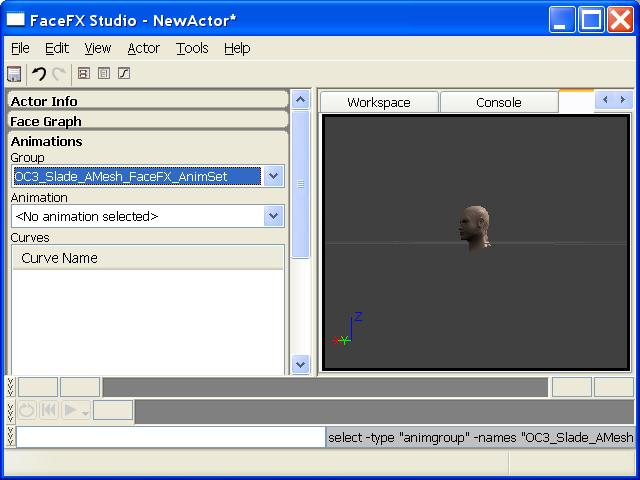
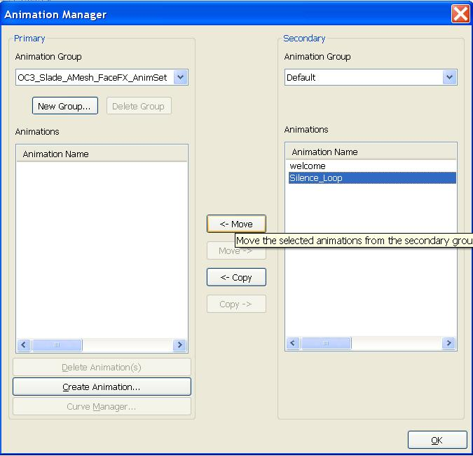
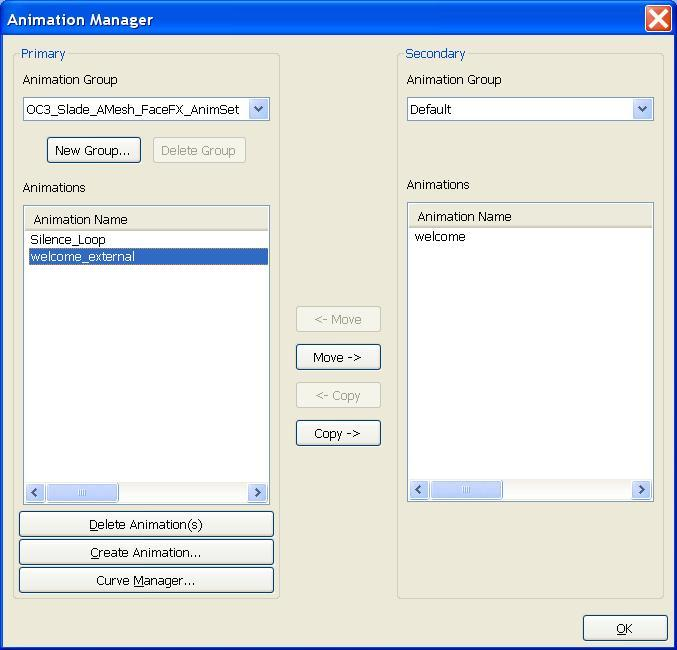

UDN
Search public documentation:
FaceFXExternalAnimSetsJP
English Translation
中国翻译
한국어
Interested in the Unreal Engine?
Visit the Unreal Technology site.
Looking for jobs and company info?
Check out the Epic games site.
Questions about support via UDN?
Contact the UDN Staff
中国翻译
한국어
Interested in the Unreal Engine?
Visit the Unreal Technology site.
Looking for jobs and company info?
Check out the Epic games site.
Questions about support via UDN?
Contact the UDN Staff
FaceFX External Animation Sets
ドキュメント概要: このドキュメントは FaceFX で External Animation Sets をどのように使用して 1 つ以上のアクタに動的にマウントできるようなアニメーションを作成するかを説明。 ドキュメントの変更ログ: Doug Perkowski? により作成。概観
FaceFX アニメーション データはカーブ名とキーとして格納されます。アニメーション カーブ名にマッチするアクタの Face Graph にノードが存在する限り、キャラクターはアニメーションを再生することができます。従って、アニメーションは複数のアクタに渡って共有され、ゲームに動的に読み込まれることが可能です。エクスポートされた Animation Sets は、デベロッパーがこれをできるようにインターフェースを持ちます。このドキュメントは、UE3 で External Animation Sets をどのように作成し、使用するかを説明していきます。ゲーム内での External Animation Sets のロードやアンロードのインターフェースは説明せず、FaceFx Studio での External Animation Sets の作成や変更のインターフェースのみを説明していきます。External Animation Set の作成
最初のステップは、External Animation Set の作成です。これをするには、既存の FaceFX Asset を右クリックし、 Create New FaceFX AnimSet... (新しい FaceFX AnimSet を作成) を選択します。 OC3_Slade FaceFX アセットは \UTGame\Content\TestPackages\MatineeTest_Resources.upk 内にあります。
ポップアップ ダイアログから、Package (パッケージ) と Group (グループ) 情報を入力し、External Animation Set に名前を与えます。“OK” を押します。新しい Animset を見るには、Content ブラウザを完全に更新しなければいけません ([Ctrl] + [F5])。 これで External Animation Set は、作成するのに使用された FaceFX Asset に関連付けられました。これは、どの FaceFX Asset にも関連付けることができますが、External Animation Set は、どのキャラクターを開けばよいかが分かるように、デフォルトの FaceFX を必要とします。デフォルト FaceFX Asset は、新しく作成した External Animation Set で右クリックをして、 Properties (プロパティ) を選択することで変更することができます。
FaceFX Studio で External Animation Set を開く
FaceFX Studio で External Animation Set を開くには、External Animation Set をダブルクリックするか、右クリックをして、 FaceFX Studio を選択します。External Animation Set の Properties (プロパティ) に格納されたデフォルトの FaceFX Asset が読み込まれ、External Animation Set がアクタにマウントされます。
上記のスクリーンショットの External Animation Set がアニメーション グループのように見えることに注目してください。ユーザーの視点からは、マウントされた External Animation Set とアニメーション グループの間には視覚的な差異がありません。しかしながら内部的には、アニメーション グループは FaceFX Asset 内に格納され、External Animation Set は Unreal パッケージの他の場所に格納されます。 UnrealEd からは一度に 1 つの External Animation Set でしか作業することができません。しかしながらゲーム内では、複数の External Animation Set を 1 つの FaceFX Asset に動的にマウントすることができます。External Animation Set にアニメーションを追加する
最初は、新しく作成された External Animation Set はアニメーションを含みません。アニメーションを External Animation Set に移動するか、Animation Manager (アニメーション マネージャ) から新しいアニメーションを生成することができます。FaceFX Studio の Actor (アクタ) メニューで Animation Manager... (アニメーション マネージャ) を選択してください。 Animation Manager (アニメーション マネージャ) で、左側のアニメーション グループ ドロップダウンから External Animation Set を選択します。下記のスクリーンショットでは、左を指している 2 つの矢印のついたボタンをクリックすることで、Default (デフォルト) グループの Silence_Loop アニメーションが External Animation Set に移動されます。
Animation Manager (アニメーション マネージャ) で、左側のアニメーション グループ ドロップダウンから External Animation Set を選択します。下記のスクリーンショットでは、左を指している 2 つの矢印のついたボタンをクリックすることで、Default (デフォルト) グループの Silence_Loop アニメーションが External Animation Set に移動されます。

また、 Create Animation... (アニメーションを作成) ボタンをクリックして、Create Animation Wizard に従って、サウンド キューから新しいアニメーションを生成することもできます。Animation Manager (アニメーション マネージャ) ダイアログの左上部で、External Animation Set が Primary Animation Group (プライマリ アニメーション グループ) として選択されていることを確認してください。下のスクリーンショットでは、!MatineeTest_Resources パッケージに格納された “welcome” サウンド キューを分析することにより、"welcome_external" アニメーションが External Animation Set に追加されました。